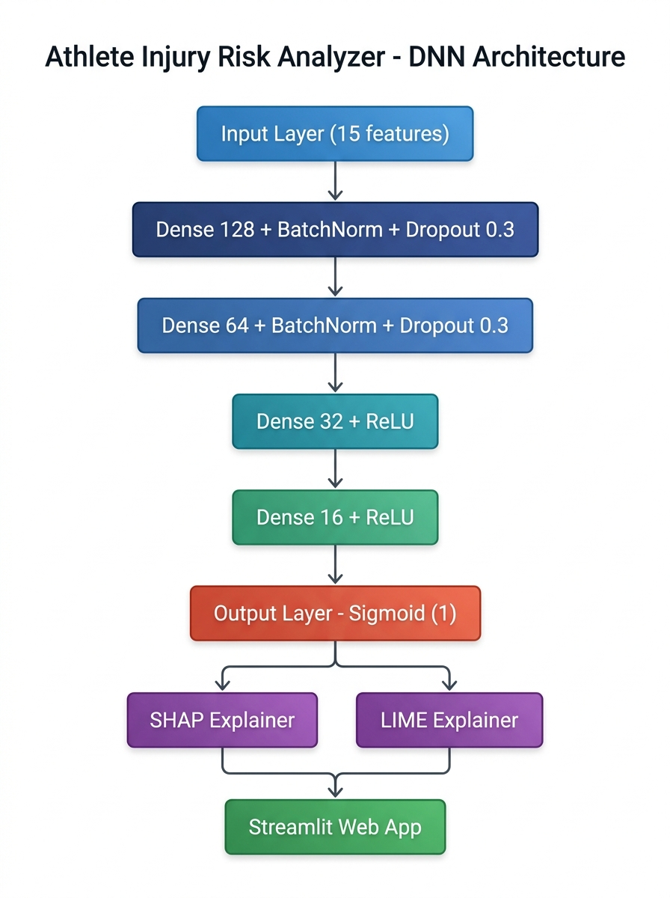
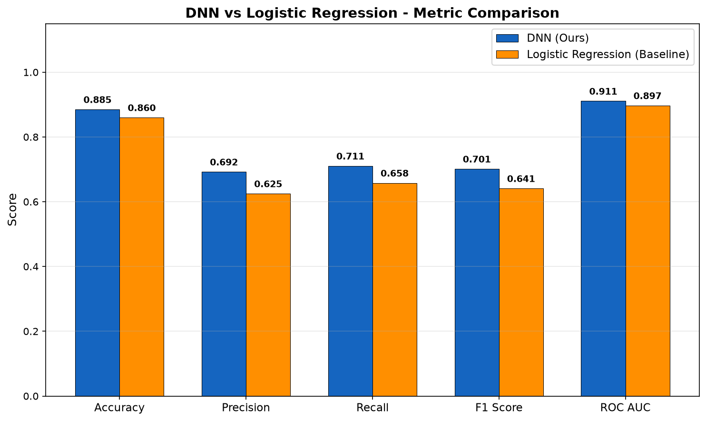
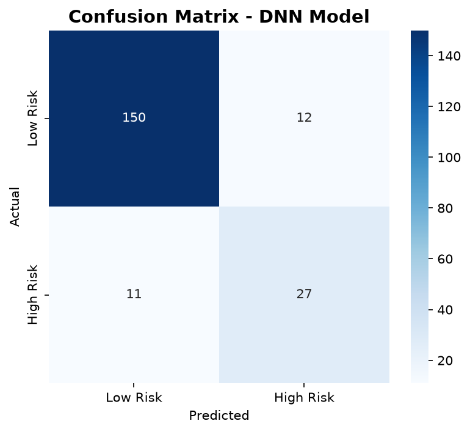
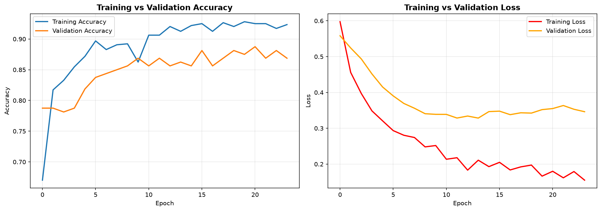

This work presents a deep-learning system that estimates athlete injury risk from 15 biometric, training, and lifestyle variables. A Multi-Layer Perceptron (MLP), regularized with batch normalization and dropout, is trained on 1,000 athlete records. The system adds SHAP and LIME explanations, personalized recommendations, and a Streamlit interface. On the held-out test set, the DNN achieves 0.8850 accuracy and 0.9108 ROC-AUC, exceeding a Logistic Regression baseline.
Keywords— deep learning, MLP, injury prediction, explainable AI, SHAP, LIME, Streamlit.
Sports injuries affect athlete well-being and performance. Conventional assessment can be subjective and inaccessible. This project provides a reproducible, data-driven risk classifier that uses readily available athlete information and explains individual predictions for coaches and athletes.
The objectives are to predict high injury risk, evaluate the model against a conventional baseline, explain each prediction, and provide a deployable interface with practical recommendations.
Prior work applies machine learning to injury prediction using GPS, wearable, and training-load data [1]–[6]. The literature shows useful predictive performance, but commonly lacks a simple tabular-data deployment, DNN explanations, or personalized recommendations. The present work combines an MLP, post-hoc SHAP/LIME explanations, and a Streamlit application.
| Study | Method | Gap addressed here |
|---|---|---|
| Rossi et al. [1] | ML with GPS data | No DNN/XAI |
| Claudino et al. [2] | Review of AI in sports | Need accessible deployment |
| Kim and Park [5] | MLP/LSTM with IMU data | Requires wearables; no XAI |
| Torres et al. [6] | DNN and XGBoost | No real-time XAI application |
The supplied Athlete.xlsx dataset contains 1,000 records, 15 input features, and a binary Injury_Risk target. It includes age, anthropometrics, training frequency and intensity, sleep, flexibility, muscle asymmetry, recovery, injury history, and stress. Categorical fields are label encoded; numeric features are standardized. A stratified 80/20 split preserves the 80.9% low-risk and 19.1% high-risk class distribution.
Module 1: a 4-hidden-layer MLP. Module 2: progressively compressive 128→64→32→16 feature representation, motivated by an autoencoder encoder. Module 3: SHAP/LIME explanations, personalized recommendations, and Streamlit deployment.

The model uses Adam (learning rate 0.001), binary cross-entropy, early stopping, learning-rate reduction, and checkpointing. The selected checkpoint is stored as models/best_model.keras.
The held-out test set contains 200 samples. Table I compares the trained DNN to Logistic Regression. The DNN improves every reported metric, particularly precision and F1 for the minority high-risk class.
| Metric | DNN | Logistic Regression | Improvement |
|---|---|---|---|
| Accuracy | 0.8850 | 0.8600 | 0.0250 |
| Precision | 0.6923 | 0.6250 | 0.0673 |
| Recall | 0.7105 | 0.6579 | 0.0526 |
| F1 score | 0.7013 | 0.6410 | 0.0603 |
| ROC-AUC | 0.9108 | 0.8970 | 0.0138 |



The high-risk class is underrepresented; therefore F1, recall, and AUC complement accuracy. The self-reported features may introduce measurement error, and the data may not represent every sport, region, age group, or competition level. Future work should collect larger multi-sport cohorts, evaluate calibration, use class weighting/SMOTE where appropriate, and validate prospectively.
The project demonstrates an end-to-end, explainable injury-risk workflow. The DNN achieved 0.8850 accuracy and 0.9108 ROC-AUC, exceeding Logistic Regression on the held-out test set. The Streamlit interface and SHAP/LIME explanations make predictions accessible, while the stated data limitations define clear next steps for responsible real-world use.